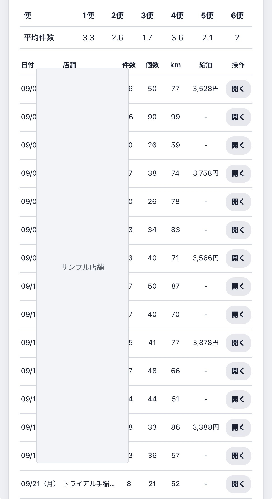
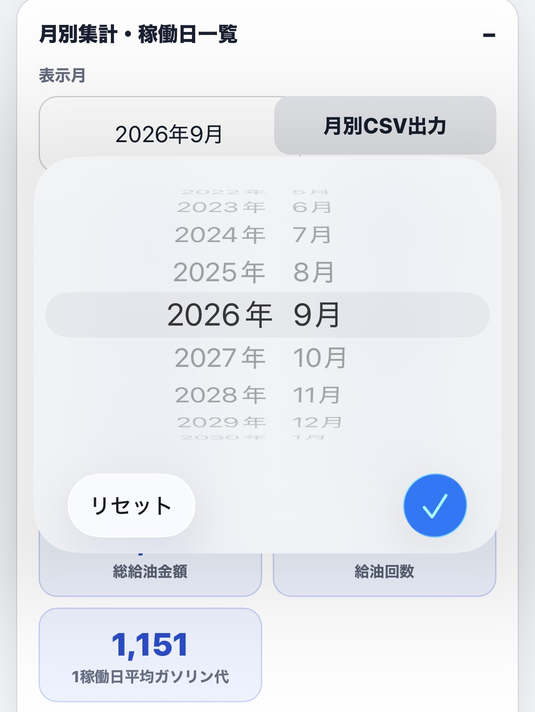
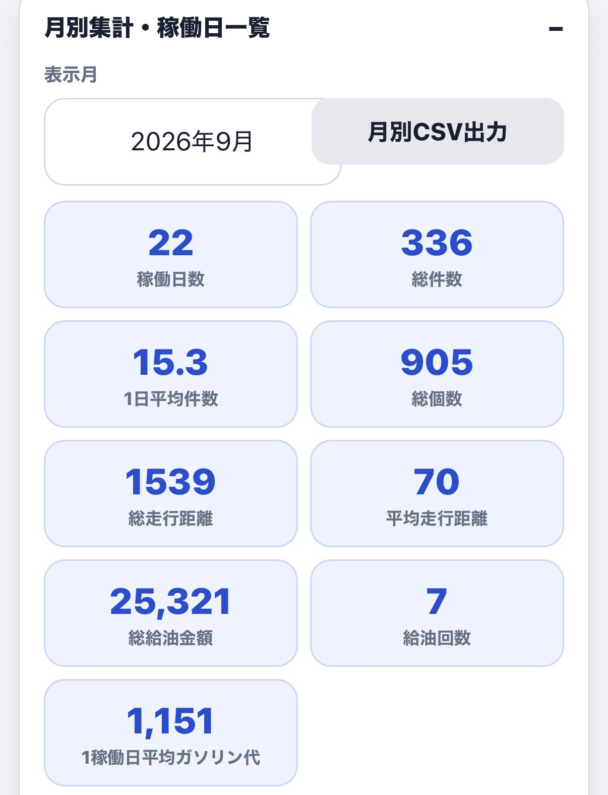
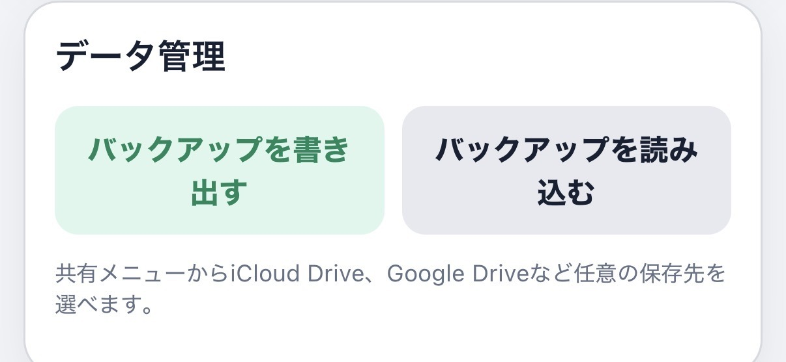
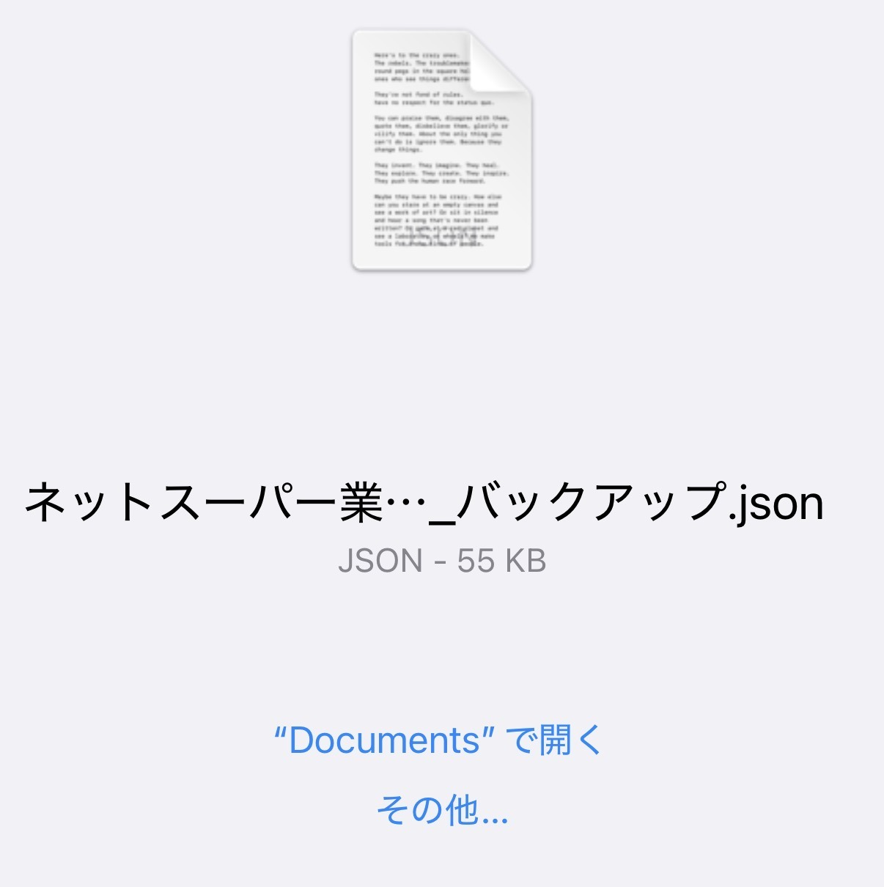

履歴・データ管理
日々の記録は月単位で振り返ることができ、バックアップとして端末外へ保存することもできます。
月間履歴
月別集計・稼働日一覧では、日付ごとの件数、個数、走行距離、給油金額などを確認できます。

表示月を選ぶ
表示月を変更すると、過去の月や現在の月を切り替えて確認できます。

月間の集計
稼働日数、総件数、1日平均件数、総個数、走行距離、給油金額などが自動で集計されます。日々の業務量や走行状況の振り返りに利用できます。

バックアップを書き出す
設定画面の「データ管理」からバックアップを書き出せます。機種変更やデータ保全に備え、定期的な保存をおすすめします。

書き出したファイルは、iCloud DriveやGoogle Driveなど、端末の共有メニューに表示される保存先へ保管できます。

バックアップを読み込む
「バックアップを読み込む」から保存済みのファイルを選択すると、記録と設定を復元できます。現在のデータへ影響するため、使用するバックアップファイルを確認してから操作してください。
バックアップファイルには業務記録や設定が含まれます。他人と共有せず、ご自身で管理できる保存先に保管してください。